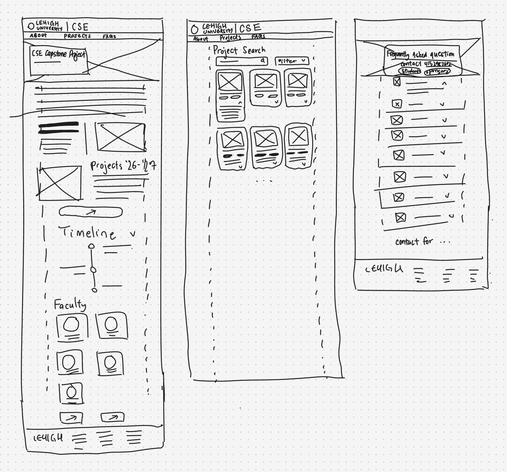
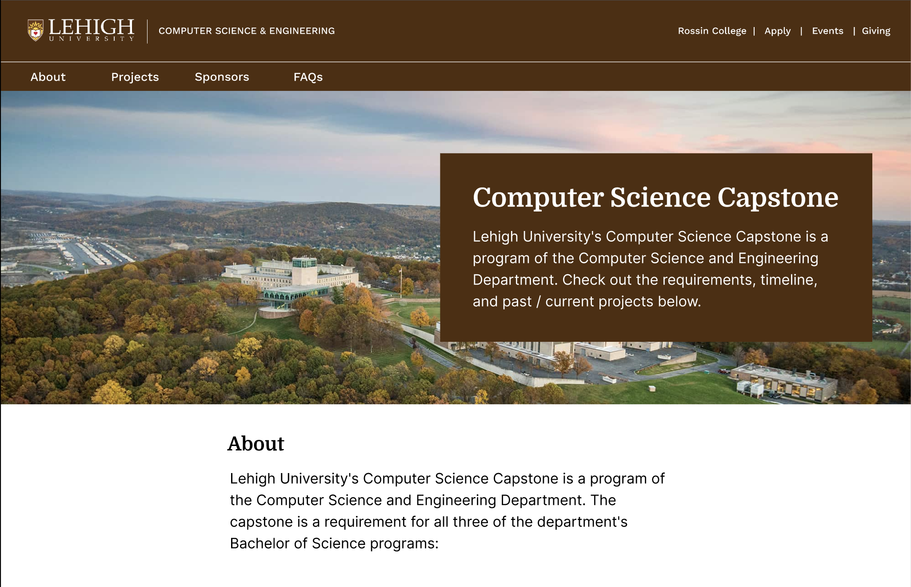
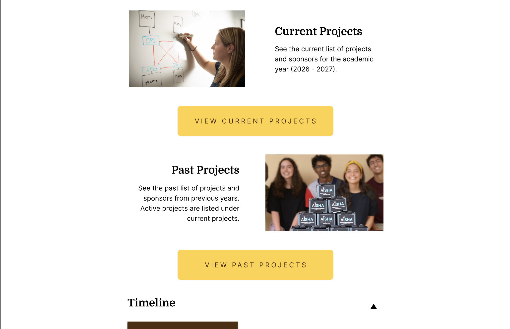
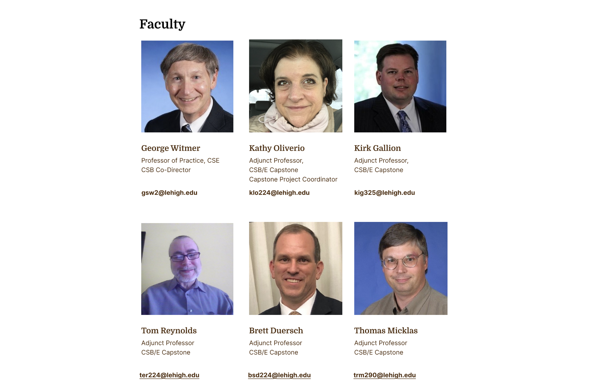
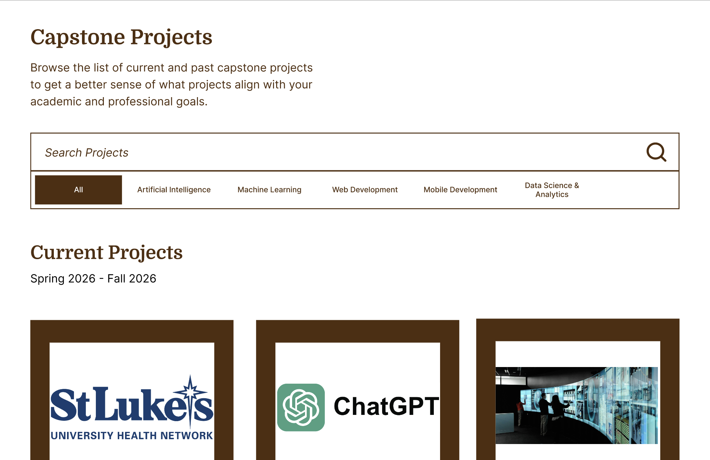
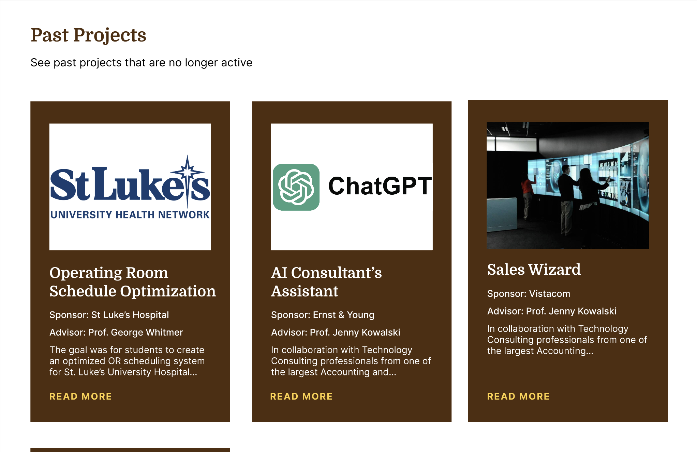
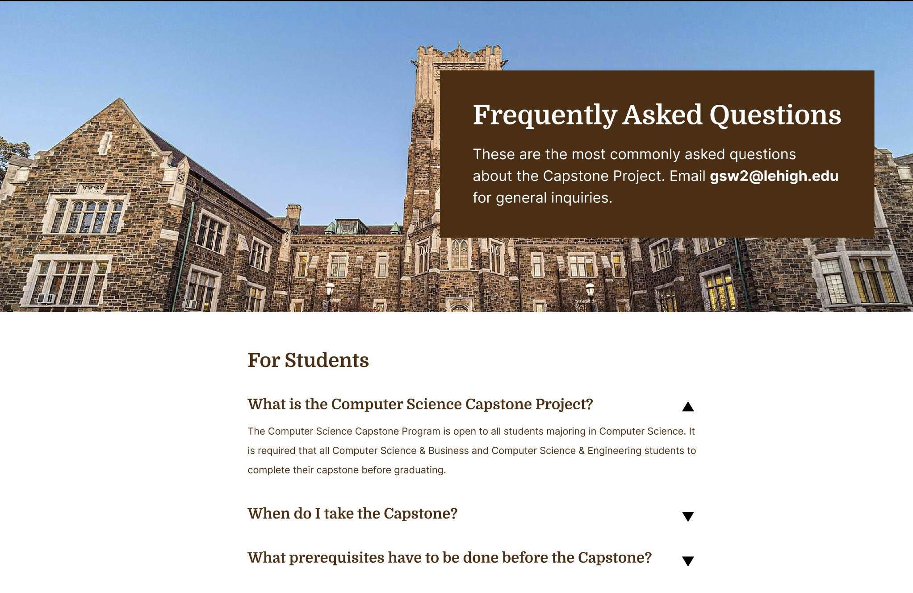

Capstone Website
01 - Old Site
The original site at lehighcomputersciencecapstone.com carried the right content but presented it in a way that made navigation unintuitive. Scroll through the pages below to see the specific friction points that drove the redesign.

Home
Faculty hidden behind individual click-through cards
Each faculty member was tucked behind its own card that required a separate click to expand. Users who wanted to browse the full faculty list had to click through every card individually, a slow and tedious process that obscured basic information that should have been visible at a glance.

Past Projects
Plain links with no context, no way to browse
Projects appear as bare hyperlinks grouped loosely by year. There are no descriptions, no sponsor names, and no project categories, so a visitor has no idea what any project involved until they click through. With no search or filter controls, finding something relevant means scrolling through years of undifferentiated entries.

Sponsors
Hidden accordion with no visual affordance
The FAQ section below the sponsor pitch is technically interactive, but nothing signals that. There is no chevron, no button, and no hover change, so the collapsed headings look identical to static text. Users who don't already know to click them will never discover the content inside.

Students
A structural copy of the sponsor page
The Students and Sponsors pages use the same layout, the same content density, and nearly the same language. A visitor switching between them would struggle to identify what applies to them. Most of the student-facing information could live on the homepage or in a single consolidated About section, eliminating the redundancy entirely.
The site had the right information but none of the right structure. The redesign opportunity was less about what to say and entirely about how to organize and present it.
02 - Wireframes
Before moving into Figma, the layout was mapped through thumbnail sketches to establish the information architecture. Key decisions made at this stage: a persistent top navigation separating About, Projects, Sponsors, and FAQs; a hero section leading with program identity; and a card-based grid for projects to enable browsing and filtering.

Mapping structure before touching the screen
Rough layouts established the page hierarchy across all four main sections. The most critical decision was surfacing the Projects page as the primary destination, since that's the content most visitors are seeking.
03 - Final Design
Every screen in the redesign traces back to a specific friction point from the old site. The decisions below are organized by the problem they solve.



A landing page that orients, then directs
Hero image
The homepage opens with a full campus photo, matching the visual tone visitors already expect from academic department sites. It establishes the program's identity before they read a single word.
Quick access buttons
Prominent buttons sit directly below the hero so any visitor, whether a student, sponsor, or recruiter, can jump straight to the content they came for without scrolling through the page first.
Faculty section
All faculty names, titles, and contact details are now displayed as a plain visible list. The old site tucked each person behind a card that required its own click to open, turning a simple browse into a repetitive multi-step task.

Card grid with metadata replaces bare link lists
Each project now appears as a card showing the team name, sponsor, year, and project category. A visitor can tell at a glance whether a project is relevant to them, with no clicking required. The page also introduces search and filter controls so users can narrow the archive by sponsor, topic, or year without scrolling through everything.

Each project card surfaces team name, sponsor, year, and CSE area at a glance

Visible affordance makes the accordion discoverable
Every accordion item now carries a chevron that rotates on expand, giving users a clear visual signal that more content is inside. The sponsor pitch and the FAQ list are separated into distinct sections so users can find what they came for without reading through content aimed at a different audience. Contact details are pulled to the top rather than buried at the bottom.
Fixes · Students & Sponsors
The two pages were structural twins, so the fix was architectural rather than visual. Student-relevant content, including program requirements, timeline, and team formation, was consolidated into the homepage About section where it reaches the right audience without needing its own page. The Sponsors page was then scoped entirely to the industry pitch and partnership details, giving each audience a destination that feels written specifically for them.